SmartArt vă permite să comunicați informații cu grafică în loc să utilizați doar text.
Există o varietate de stiluri din care puteți alege, pe care le puteți folosi pentru a ilustra multe tipuri diferite de idei.
-
Plasați punctul de inserare în document în care doriți să apară graficul SmartArt.
-
Din fila Inserare, selectați comanda SmartArt din grupul Ilustrații.
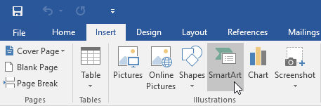
-
Va apărea o casetă de dialog. Selectați o categorie din stânga, alegeți graficul SmartArt dorit, apoi faceți clic pe OK.
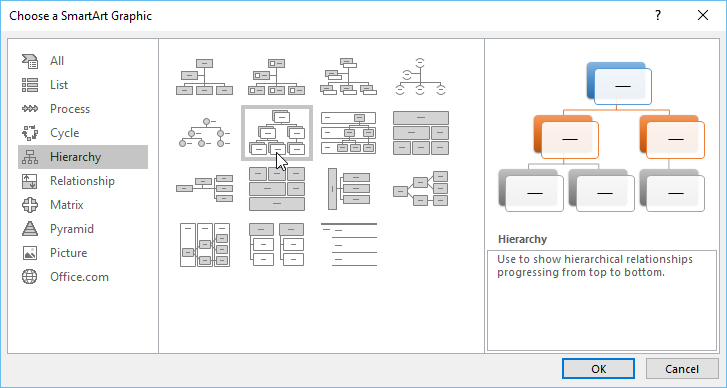
-
Grafica SmartArt va apărea în documentul dvs.
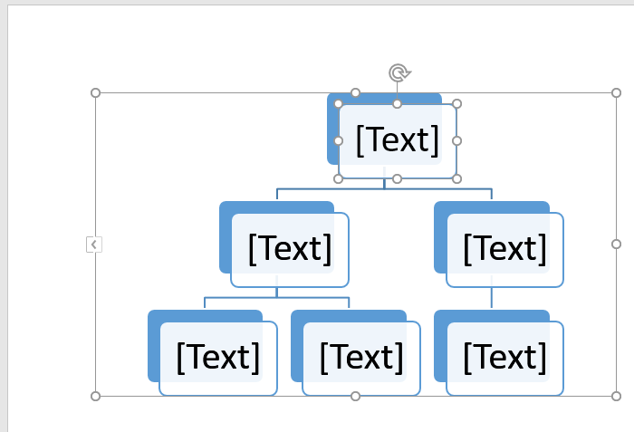
-
Selectați graficul SmartArt. Panoul de text ar trebui să apară în partea stângă.
Dacă nu apare, puteți face clic pe săgeata mică din marginea stângă a graficului.
-
Introduceți text lângă fiecare marcator din panoul de text.
Textul va apărea în forma corespunzătoare. Acesta va fi redimensionat automat pentru a se potrivi în interiorul formei.
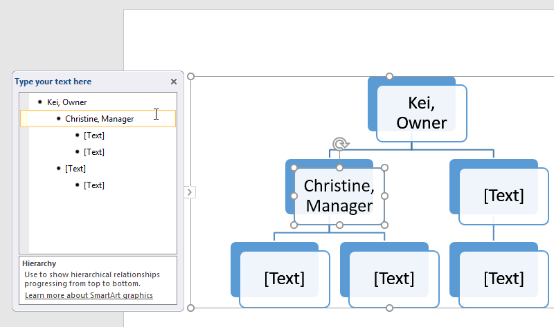
Este ușor să adăugați forme noi, să le schimbați ordinea și chiar să ștergeți forme din graficul dvs. SmartArt.
Puteți face toate acestea în panoul de text și este foarte asemănător cu crearea unui contur cu o listă pe mai multe niveluri.
-
Pentru a retrograda o formă, selectați marcatorul dorit, apoi apăsați tasta Tab.
Glonțul se va deplasa la dreapta, iar forma se va deplasa în jos cu un nivel.
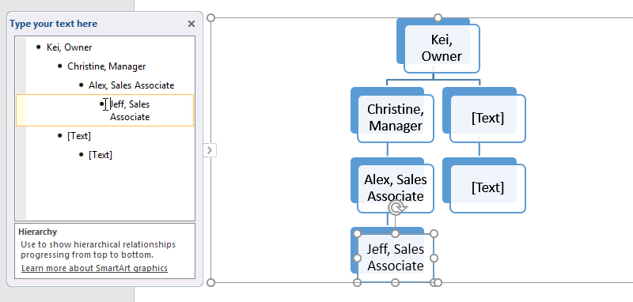
-
Pentru a promova o formă , selectați marcatorul dorit, apoi apăsați tasta Backspace (sau Shift+Tab).
Glonțul se va deplasa la stânga, iar forma se va muta cu un nivel în sus.
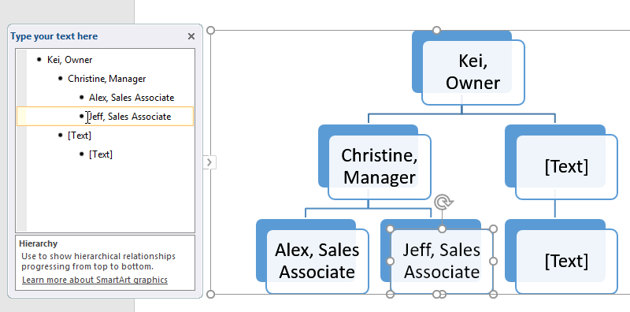
-
Pentru a adăuga o formă nouă, plasați punctul de inserare după marcatorul dorit, apoi apăsați Enter.
Un nou marcator va apărea în panoul de text, iar o nouă formă va apărea în grafic.
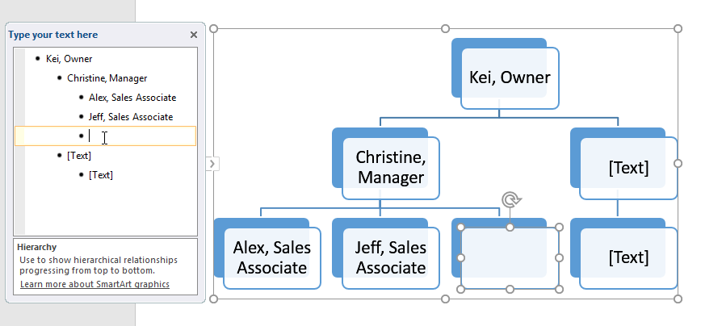
-
Pentru a elimina o formă, apăsați în continuare Backspace până când marcatorul este șters.
Forma va fi apoi eliminată. În exemplul nostru, vom șterge toate formele fără text.
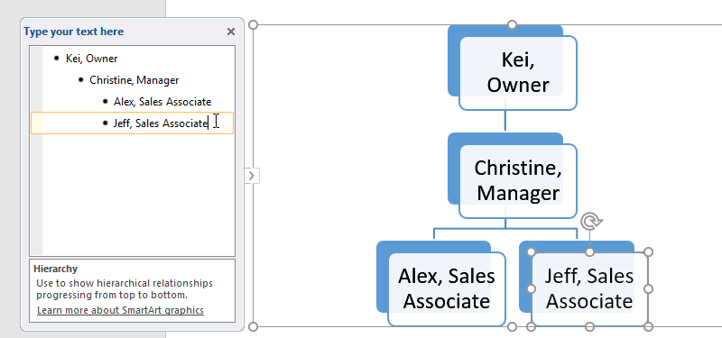
Dacă preferați să nu utilizați panoul de text pentru a vă organiza SmartArt, puteți utiliza comenzile din fila Design din grupul Creare grafică.
Doar selectați forma pe care doriți să o modificați, apoi alegeți comanda dorită.
-
Promovați și retrogradați: utilizați aceste comenzi pentru a muta o formă în sus sau în jos între niveluri.
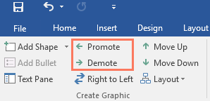
-
Mutați în sus și în jos: utilizați aceste comenzi pentru a schimba ordinea formelor de la același nivel.
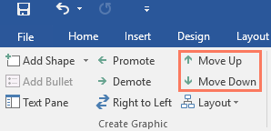
-
Adăugați formă: utilizați această comandă pentru a adăuga o nouă formă graficului dvs.
De asemenea, puteți da clic pe săgeata derulantă pentru opțiuni de plasare mai exacte.
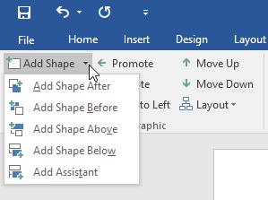
După inserarea SmartArt, există mai multe lucruri pe care ați putea dori să le schimbați cu privire la aspectul său.
Ori de câte ori selectați o imagine SmartArt, filele Design și Format vor apărea în partea dreaptă a Panglicii.
De acolo, este ușor să editați stilul și aspectul unui grafic SmartArt.
-
Există mai multe stiluri SmartArt, care vă permit să modificați rapid aspectul și senzația SmartArt-ului dvs.
Pentru a schimba stilul, selectați stilul dorit din grupul de stiluri SmartArt.
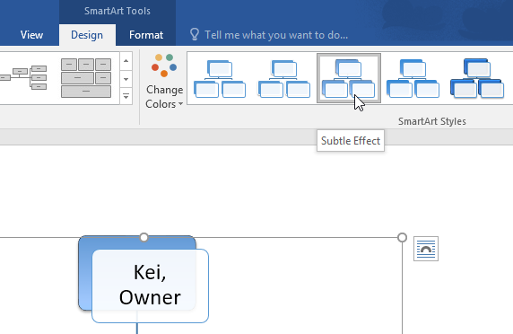
-
Aveți o varietate de scheme de culori de utilizat cu SmartArt.
Pentru a schimba culorile, faceți clic pe comanda Modificare culori și alegeți opțiunea dorită din meniul derulant.
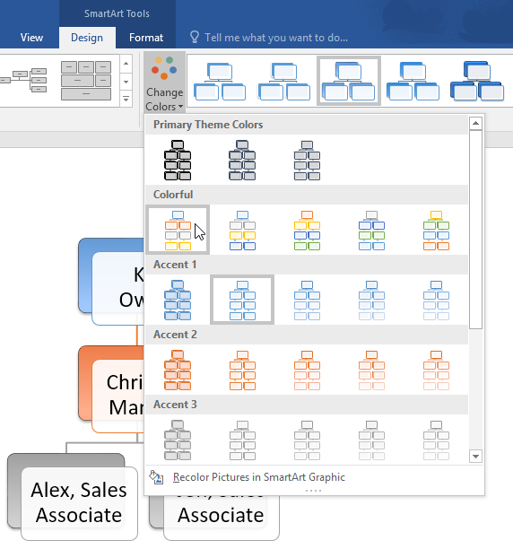
-
De asemenea, puteți personaliza fiecare formă independent. Doar selectați orice formă din grafic, apoi alegeți opțiunea dorită din fila Format.
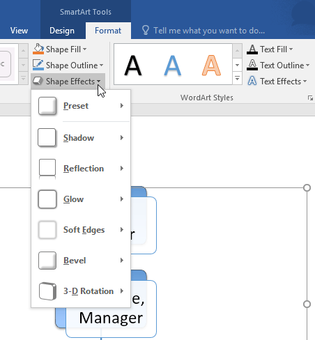
Dacă nu vă place modul în care informațiile dvs.
sunt organizate într-o grafică SmartArt, puteți oricând să îi schimbați aspectul pentru a se potrivi mai bine conținutului dvs.
-
Din fila Design, faceți clic pe săgeata derulantă Mai multe din grupul Aspecte.
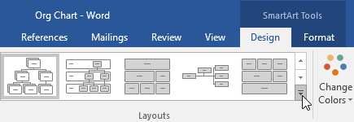
-
Alegeți aspectul dorit sau faceți clic pe Mai multe aspecte pentru a vedea și mai multe opțiuni.
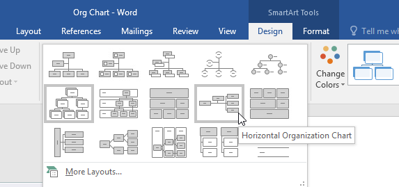
-
Va apărea aspectul selectat.
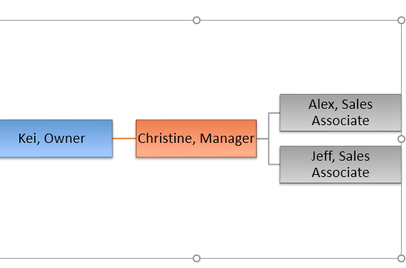